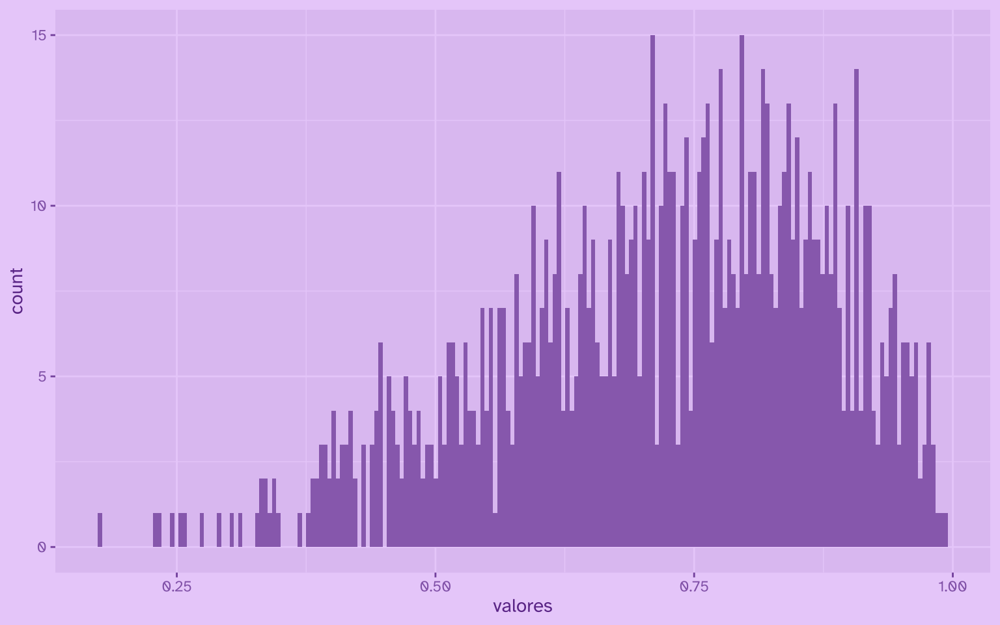
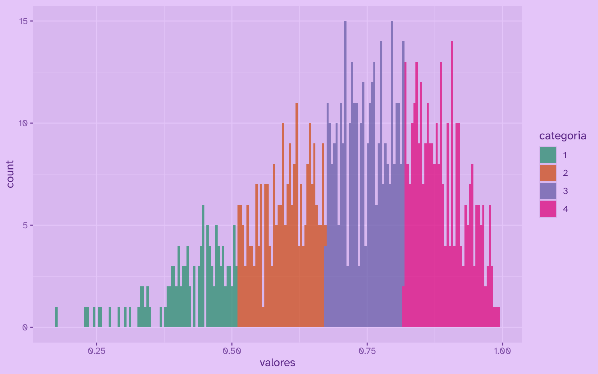

Categorizar una variable continua con el método de cortes naturales Jenks
26/8/2026
El método de cortes naturales de Jenks se usa para categorizar variables contínuas en variables ordinales; es decir, pasar de una variable numérica a la cantidad de categorías discretas que necesitemos.
El método Jenks busca maximizar varianza entre clases, y minimizar varianza dentro de las clases. La gracia de Jenks es que resalta los saltos inherentes a los datos, y por lo tanto los cortes que ofrece suelen tener más sentido en datos continuos.
En R base se implementa con la función classIntervals(..., style = "jenks"), pero
el paquete {BAMMtools} ofrece una implementación en C mucho más eficiente: getJenksBreaks().
Primero creemos datos de prueba, una distribucion de densidad beta:
library(dplyr)
datos <- tibble(
valores = rbeta(1000, 5, 2)
)
Ahora mirémoslos en un gráfico simple:
library(ggplot2)
datos |>
ggplot() +
aes(x = valores) +
geom_histogram(bins = 200)

Ahora usamos getJenksBreaks() para crear n cortes en los datos, a partir de los cuales podremos crear n-1 grupos o categorías. Probemos, como ejemplo, con 5 cortes:
library(BAMMtools)
cortes <- getJenksBreaks(datos$valores, 5)
cortes
[1] 0.1756957 0.5092826 0.6712164 0.8172866 0.9932851
Aplicamos los cortes a los datos con la función cut(), que corta variables numéricas continuas en los puntos indicados; en este caso, los cortes obtenidos con el método Jenks:
datos_categoricos <- datos |>
mutate(
categoria = cut(
valores, # variable a cortar
labels = 1:4, # nombres de los cortes resultantes
breaks = cortes, # vector con los cortes
include.lowest = T
)
)
Ahora visualicemos el resultado:
datos_categoricos |>
ggplot() +
aes(x = valores, fill = categoria) +
geom_histogram(bins = 200, alpha = 0.7) +
scale_fill_discrete(palette = "Dark2")

Publicaciones sobre limpieza-de-datos


Publicaciones sobre procesamiento-de-datos